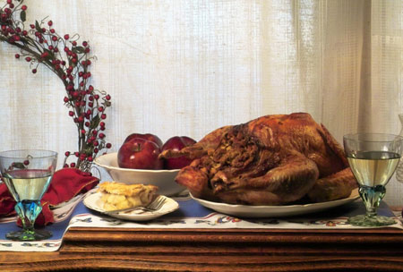

It's the holiday season again, and the perfect time to indulge insome of the delicious homemade foods that come from our manydifferent food traditions. One good resource is Slow Food USA,whose slogan is 'Taste, tradition, and the honest pleasures offood.'
A Global Community
Slow Food International began in Italy in 1989 to help protectregional foods and styles of cooking that were rapidly beingoverwhelmed by the culture of fast food. The Slow Foodorganization, which celebrates a food culture of tradition,diversity and respect for the environment, now has 80,000 membersfrom 50 countries, including farmers, chefs and many other foodlovers.
Local Events
Closer to home, local chapters of Slow Food USA hold frequentevents across the United States, meeting (and eating) at farms,restaurants and everywhere in between. TheSlow Food USAWeb site includes contact information to help people find localgroups, which are active in most major cities across thecountry.
Rediscovering Favorite Foods
Ready to reconnect with some holiday traditions? Here are a fewideas to try.
|
 |
|
|